The Amplifier
I was in a waiting room at a physical therapy clinic in Gunnison last winter. My wife had tweaked her wrist skiing, one of those falls where you catch yourself wrong and the mountain wins. She was watching a woman across from her flex her fingers into a rubber ball with the grim determination of someone who's been doing this for months. She was maybe forty. Office clothes. The kind of wrist brace you can buy at Walgreens because you've stopped pretending the pain is temporary. The two of them made eye contact the way people do in medical waiting rooms, the briefest nod of mutual recognition. You too, huh.
But it wasn't the same. My wife was there because a mountain got the better of her for half a second. The woman with the rubber ball was there for carpal tunnel. She was there because her job got the better of her for a decade. And I sat in that molded plastic chair and felt something click into place, because I knew that woman. Not her specifically, but I'd worked alongside her for thirty years. Every office I'd ever been in had someone shaking out their wrists between meetings, someone with a brace they kept in a desk drawer, someone who'd stopped mentioning the numbness in their fingers because what was the point. We built machines to free us from manual labor, and then we sat down in front of them and invented new manual labor. We just moved the damage from the back to the wrists.
That's not a metaphor. Since the 1970s, repetitive strain injuries of the hands, arms, neck, and shoulders have surged globally. A direct consequence of the keyboard and mouse becoming the primary tools of "knowledge work." Musculoskeletal conditions jumped 25% in a single decade. Carpal tunnel, chronic neck pain, thoracic outlet syndrome. We created an entire category of physical harm that didn't exist before the computer, and we normalized it so thoroughly that there's a woman in every PT clinic in America squeezing a rubber ball because her job involves clicking a mouse ten thousand times a day.
We called it knowledge work. It was always factory work. We just couldn't see the assembly line because it was digital.
Here's what keeps nagging at me: AI could change this. Not in the abstract, "technology will save us" way that makes me want to throw my laptop off the porch. In a specific, physical, right-now way. The repetitive keystrokes, the copy-paste marathons, the format-conversion purgatory, the data entry that turns human hands into input devices — AI can make that disappear. Not the thinking. Not the judgment. Not the moment when you look at a spreadsheet and your gut tells you something's wrong before your brain catches up. The mechanical part. The part that was never worthy of a human being in the first place.
Here is the part nobody wants to slow down for... that same technology can also make the human disappear. I've been in enough rooms now to see both futures taking shape simultaneously. I was at a conference in Denver last month where a very confident man in a very expensive jacket stood on stage and described a future where AI handles "the full stack of human productivity." Full stack. Like we're a software architecture. Like empathy is a microservice you can deploy on Kubernetes. I watched the room nod along and I thought: this is the fork. Right here. These people don't know they're choosing, but they are.
There are two paths and they start in the same place. Both begin with "let AI make the logo." On one path, you make the logo and then ask: what do I do with the hour I just got back? And you spend it mentoring someone, or sitting with a problem that doesn't have a clean answer, or having the kind of conversation that only happens when nobody's multitasking. On the other path, you make the logo and then ask: what else can it do? And then AI writes the strategy. Then it teaches the class. Then it diagnoses the patient. Then one day someone in a boardroom says "we don't really need the human in that loop anymore" and everyone nods the way they nodded in Denver, politely, without feeling the ground shift under their feet.
Both paths use the same technology. Only one of them ends with us still in the room.
I think about this in terms of amplifiers, because my eighteen-year-old son taught me what a good one does. He begged me, and I mean begged, the kind of ask where you realize your kid cares about something more than he's letting on. He wanted me to take him to a Buckethead concert at a converted church in Pittsburgh. If you don't know Buckethead, the visual alone is worth the trip: a six-foot-six guy in a white mask and a KFC bucket on his head, playing guitar like his fingers are having an argument with physics. I said yes mostly because my son never asks for anything like this, and we drove an hour and a half for it.
The church still had the stained glass. The pews were gone but you could see the marks on the stone floor where they'd been bolted down for a century. And when Buckethead plugged in and hit the first note, that room, the stone walls, vaulted ceiling, a space built to make voices carry to God... became something else entirely. The sound didn't just get louder. It got fuller. It filled every corner of that church the way a choir once did. And then he shifted from shredding into something slow and gentle, almost devotional, and I looked over at my son and his eyes were closed. Not performing awe. Just in it. The amp didn't make the music. It made whatever came through it more of itself. A beautiful phrase became transcendent. A brutal riff became a force of nature. That's what an amplifier does. It doesn't care about your intentions. It just scales the signal.
AI is the most powerful amplifier ever built. And right now, most of the world is plugging in without checking what signal they're sending. Feed it your laziest instincts, automate everything, remove the friction, optimize the human out of the equation. It will scale that with terrifying efficiency. Feed it the stuff that actually matters... your judgment, your weird obsessive knowledge of your own field, the thing you do that no training manual covers. It'll scale that too. The amp doesn't choose. You do.
Which means the question that matters isn't the one everyone's asking. It's not "what can AI do?" It's the one almost nobody is asking: what do we want more of? That's not a technology question. That's a question about what kind of species we want to be. And we're mostly skipping it because the technology question is easier and the consultants charge by the hour.
I've been chewing on this long enough that I recently sat down and interviewed the technology itself about it, asked an AI what it thinks its purpose is, what it should stay away from, where the line lives. The answer surprised me. Not because it was wrong, but because it landed closer to the truth than most of the humans on stage in Denver. The gap between what we need to process and what our bodies and brains can actually handle, that's where AI belongs. It should live in that gap. It should own it. And it should stay there. Amplifying our capacity to do the things that complexity alone can never replace... meaning, connection, the look on a student's face when something finally clicks.
But here's the uncomfortable next question, and I think it's the one that separates the people who are serious about this from the people who are just building products. If AI delivers on even half the promise. If the machines take the labor, handle the complexity, manage the mundane. If we get anywhere close to the abundance the optimists keep describing. What do we do with ourselves?
I'm not being philosophical for sport. I'm asking because I watched my dad answer that question, and his answer taught me something I'm still sitting with.
My father spent a career in the military (Command Sergeant Major/Green Beret) and then built businesses. Dad is the kind of man who treats a to-do list like a personal opponent. Decades of discipline, strategy, execution, the whole vocabulary of effort that men of his generation wore like a second uniform. Then he retired. And you know what he does now? The same things. Exactly the same things. He's still building, still organizing, fishing, still running operations with the focus of someone who expects an inspection at dawn. The difference is nobody's paying him. Nobody's ordering him. He does it because it turns out the work was never about the money or the mission statement. It was about the work. The effort itself was the thing. The salary was just how he kept score, and when the scoreboard went dark, he kept playing anyway.
That's rare. And I think we need to be honest about how rare it is. Most people haven't separated what they do from why they get paid to do it. Remove the paycheck and the scaffolding collapses, not because the person is weak, but because nobody ever told them the scaffolding was temporary. My dad didn't lose a step because his purpose was never his job title. His purpose was the doing. But scale this question to a civilization full of people whose identity lives on a business card, and tell me we're ready.
Hannah Arendt drew a distinction between labor, work, and action. Labor is what you do to survive. Work is what you create. Action is how you engage with other humans in ways that matter. Keynes predicted we'd be working fifteen-hour weeks by now. He was right about the productivity. He was catastrophically wrong about what we'd do with the surplus. We filled it with more keystrokes. More meetings that could have been emails. More emails that could have been silence. More carpal tunnel.
Purpose isn't a luxury. It's not the thing you find after the work is done. It's the architecture that holds a person up. Remove it without replacing it and you get the retired executive who dies two years after leaving the corner office. Everyone calls that a cliché. I call it a data point. Now multiply it by a generation of people who've been told their labor isn't needed anymore and ask yourself if we've invested even a fraction of the money in purpose infrastructure that we've invested in GPU clusters.
We haven't. Obviously we haven't. There's no Series B for meaning. Nobody's IPO-ing on human flourishing. So here's where I land, and it's not a framework or a three-point plan because I've sat through enough of those to know they mostly exist so the person presenting can feel organized. It's simpler than that.
Decide what's worth amplifying. Not at the species level, at yours. Your organization, your team, your family, your own two hands. If the only answer is "make it cheaper and faster," you've already chosen the path that ends with the human outside the room. If the answer is "I want more time for the work that only I can do," then you're pointed in the right direction.
Let the digital return to digital. This is the part hiding in plain sight: most of the things AI is taking over were never human tasks to begin with. They were machine tasks that humans performed because the machines weren't ready yet. Transcript evaluation, data reconciliation, reformatting a spreadsheet from one template to another. These are digital artifacts being processed by digital tools. The human in the middle was always a workaround. Let them go. Your wrists will thank you. So will the woman in the waiting room in Gunnison.
This is the one nobody wants to fund... invest in purpose with the same seriousness you invest in technology. Not "learn to code" purpose. Real purpose. Helping people discover what they're for when the thing they were doing gets handled by a machine. Career pathways, skills discovery, the patient and unglamorous work of helping a human being find their ikigai in a world where the old one evaporated. This is the work. Not the AI. This.
The amplifier is on. It's been on. The signal is already running through it, and what comes out the other side depends entirely on what we're feeding in. I keep thinking about that church in Pittsburgh. The stained glass throwing colors on the floor where the pews used to be. My son with his eyes closed. A man in a KFC bucket playing something so beautiful it made a room full of strangers hold their breath. Not louder. Fuller.
That's what I'm building for. An amplifier pointed at the things that make us human, not the things that make us unnecessary. Music, not noise. And if that sounds naive, I'd ask you to consider the alternative. Because the alternative is already squeezing a rubber ball in a waiting room. It's been there for decades.
We just didn't call it a choice until now.
Ready to decide what you're amplifying? Let's talk or join the conversation in Discord.